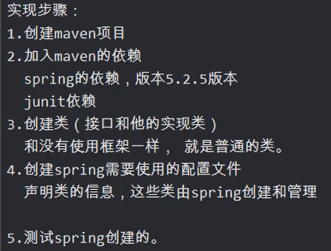

IOC：控制反转，是一个理论，概念，思想。把对象的创建父子，管理工作都交给代码之外的容器实现，也就是对象的创建是由其他外部资源完成。
控制：创建对象，对象的属性赋值，对象之间的关系管理。
反转：把原来的开发人员管理，创建对象的权限转移给代码之外的容器实现。由容器代替开发人员管理对象，创建对象，给属性赋值。
正转：由开发人员在代码中，使用new构造方法创建对象，开发人员主动管理对象。
容器：是一个服务器软件，一个框架。
为什么使用ioc：目的是减少对代码的改动，也能实现不同的功能。
java中创建对象的方式：
1、构造方法；
2、反射
3、序列化
4、克隆
5、ioc
6、动态代理
ioc的体现：
servlet：1、创建类继承HttpServlet
2、在web.xml中注册servlet
3、Servlet是Tomcat服务器创建的。Tomcat也成为容器。
ioc的技术实现：
DI：ioc的技术实现
DI：依赖注入，只需要在程序中提供要使用的对象的名称就可以，至于对象如何在容器中创建，赋值，查找都由容器内部实现。
spring是使用的di实现ioc的功能，spring底层创建对象，使用的是反射机制。
第一个例子：（使用容器创建对象）

<!--Spring依赖-->
<dependency>
<groupId>org.springframework</groupId>
<artifactId>spring-context</artifactId>
<version>5.2.5.RELEASE</version>
</dependency>
更改@test全称
Shift+F6
在resources目录下加入spring的配置文件
Spring配置文件介绍
1、beans：是根标签，spring把java对象称为bean。
2、spring-beans.xsd是约束文件，和Mybatis指定的 dtd是一样的。
鼠标停留在 resources目录，Ait+insert--->XML Configuration File--->Spring Config---->文件名起为：applicationContext
声明bean（告诉spring要创建某个类的对象）
id:对象的自定义名称，唯一值。spring通过这个名称找到对象。
class：类的全限定名称（不能是接口，因为spring是反射机制创建对象，必须使用类）

<bean id="" class="" />
创建容器对象ApplicationContext

spring创建对象的时机：在读取配置文件
new ClassPathXmlApplicationContext(config);
的时候，就将对象创建完毕（调用无参构造），放入map，使用时取出对象。

获取容器中对象信息的api
ApplicationContext ac=new ClassPathXmlApplicationContext(config);
//获取容器中定义对象的数量
int nums=ac.getBeanDefinitionCount();
//获取容器中每个定义的对象的名称
String[] names=ac.getBeanDefinitionNames();
for(String name:names){
System.out.println(name);
}
创建非自定义对象
和创建自定义对象相同，只要知道类的全限定名称。
DI分为两类
1、基于XML的DI：
2、基于注解的DI：

基于XML的DI：
设值注入：（给对象的属性赋值）
di的语法分类：
1>set注入（property标签只是执行类中的set方法）
1>简单类型的set注入
<bean id="" class="">
<!--一个property一次只能给一个属性赋值-->
<property name="属性名" value="属性值"><!--set属性名(属性值)-->
</bean>
2>引用类型
<bean id="" class="">
<property name="属性名" ref="bean的id"><!--set属性名(属性值)-->
</bean>
2>构造注入
通过有参构造实现创建对象的同时传递参数。
<constructor-arg>
<!--一个<constructor>标签表示构造方法的一个参数-->
<!--<constructor>标签属性-->
<!--name:表示构造方法的形参名-->
<!--index:表示构造方法的参数的位置,参数从左往右是0,1,2的顺序-->
<!--value:构造方法的形参是简单类型，使用value-->
<!--ref:构造方法的形参是引用类型，使用ref-->
<bean id="" class="">
<constructor-arg name="" value=""/>
<constructor-arg name="" ref=""/>
</bean>
---
<!--使用index属性-->
<bean id="" class="">
<constructor-arg index="0" value=""/>
<constructor-arg index="1" ref=""/>
</bean>
<!--省略index，赋值顺序必须和形参顺序一致-->
<bean id="" class="">
<constructor-arg value=""/>
<constructor-arg ref=""/>
</bean>

引用类型的自动注入
spring框架根据某些规则可以给引用类型赋值，不用手动给引用类型赋值。使用的规则常用的是byName，byType。
byName（按名称注入）：java类中引用类型的属性名和spring容器中（配置文件 ）<bean>的id名称一样并且数据类型是一致的，这样的容器中的bean ，spring能够赋值给引用类型。
<!--语法-->
<bean id="" class="" autowire="byName">
简单类型属性赋值
</bean>
byType(按类型注入)：java类中引用类型的数据类型和spring容器中 （配置文件）<bean>的class属性是同源关系的，这样的bean能够赋值给引用数据类型。（符合条件的bean只能存在一个）
同源： 1、java类中引用类型的数据类型和class的值是一样的。
2、java类中引用类型的数据类型和bean的class的值是父子类关系。
3、java类中引用类型的数据类型和bean的class的值是接口和实现类关系。
<!--语法-->
<bean id="" class="" autowire="byType">
简单类型属性赋值
</bean>
使用多配置文件
1、每个文件的大小比一个文件小很多，效率高。
2、避免多人竞争带来的冲突。
多文件的分配方式：
1>按照项目的模块分开，一个模块配置一个配置文件。
2>按类的功能，数据库相关一个配置文件，事务一个配置文件，services一个配置文件。
包含关系的配置文件
主配置文件
<!--spring-tatal表示主配置文件：用来包含其他配置文件，一般不定义对象-->
语法：<import resource="其他配置文件的路径">
关键字："classpath:"表示类路径（class文件所在的目录），在spring的配置文件中要指定其他文件的位置，需要告诉spring到哪去加载读取文件。
注意：Maven编译生成的target目录下classes为类路径。
<import resource="classpath:">
在包含关系的配置文件中，可以使用通配符（*：表示任意字符）
<import resource="classpath:bao/spring-*.xml">
可以表示当前路径符合条件的配置文件。
注意： 主配置文件不能符合通配符的条件，否则会死循环。
使用通配符必须要在目录下。
基于注解的DI：
一、使用注解的步骤：
1、加入maven的依赖 spring-context，在你加入spring-context的同时，间接加入spring-aop的依赖。使用注解必须使用spring-aop依赖。
2、在类中加入spring的注解（多个不同功能的注解）
3、在spring的配置文件中，加入一个组件扫描器的标签，说明注解在项目中的位置。
4、使用注解创建对象，创建容器ApplicationContext
二、相关的注解
1、@Componten
2、@Respotory
3、@Service
4、@Controller
5、@Value
6、@Autowired
7、@Resource
三、在spring配置文件中声明组件扫描器
<!--声明组件扫描器（component-scan），组件就是java对象
base-package：指定注解在项目中的包名。
-->
<!--component-scan工作方式：spring会扫描遍历base-package指定的包，把包和子包中的所有类，找到类中的注解，按照注解的功能创建对象，或者给属性赋值-->
<!--这种方式原理是递归遍历文件夹-->
<context:component-scan base-package=""/>
<!--加入了component-scan标签，配置文件的变化：
1、加入了一个新的约束文件spring-context.xsd
2、给这个新的约束文件起个命名空间的名称
-->
<!--指定多个包的三种方式-->
<!--第一种方式：使用多次组件扫描器，指定不同的包-->
<!--第二种方式：使用分隔符（;或者,）分隔多个包名-->
<context:component-scan base-package="com.ba01;com.ba02"/>
<!--第三种方式：指定父包-->
<context:component-scan base-package="com"/>
<!--包的层数越高，扫描的文件越多，效率越低，建议满足项目需求就行-->
四、注解的介绍
1、@Component：创建对象的，等同于<bean>的功能
属性：value 就是对象的名称，也就是<bean>的id值
value的值是唯一的，创建的对象在整个spring容器中就一个。
位置是：在类的上面。
@Component(value="值")
@Component("值")
@Component()//不指定对象名称，由spring提供默认名称，默认名称为：类名的首字母小写
2、@Respotory(用在持久层类的上面)：放在dao的实现类上面，表示创建dao对象，dao对象是能访问数据库的。
3、@Service(用在业务层类的上面)：放在Service的实现类上面，表示创建Service对象，Service是做业务处理，可以有事务等功能的。
4、@Controller(用在控制器上面)：放在控制器（处理器）类的上面，创建控制器对象的，能够接收用户提交的参数，显示请求的处理结果。
2/3/4注解的使用语法和1、@Component是一样的。都能够创建对象，但是这三个注解还有额外的功能。
@Respotory 、@Service、 @Controller是给项目的对象分层的。
设值注入：（给对象的属性赋值）
5、@Value（简单类型属性赋值）
属性：value 是String类型的，表示简单属性的属性值
位置：1、在属性定义上面，无需set方法，推荐使用。
2、在set方法上面
6、@Autowired（引用类型赋值）
介绍：spring框架提供的注解，实现引用数据类型的赋值。
spring通过注解给引用类型赋值，使用的是自动注入原理。支持byName，byType。
@Autowired默认使用的是byType自动注入。
位置：1、在属性定义的上面，无需set方法，推荐使用。
2、在set方法上面。
如果要使用byName自动注入。
1、在属性上面加入@Autowired
2、在属性上面加入@Qualifier(value="bean的id")：表示使用指定名称的bean完成赋值。
（这两个注解没有先后顺序，但习惯先写@Autowired）
属性： required，是一个 Boolean类型，默认为true；
required=true;表示引用数据类型赋值失败，程序报错，并终止执行。
required=flase;表示引用数据类型赋值失败，程序正常执行，该引用数据类型为NULL。
推荐为true，会尽早暴露程序当中的错误。
注：在使用@Autowired时，首先在容器中查询对应类型的bean
如果查询结果刚好为一个，就将该bean装配给@Autowired指定的数据
如果查询的结果不止一个，那么@Autowired会根据名称来查找。
如果查询的结果为空，那么会抛出异常。解决方法时，使用required=false
7、@Resource（引用类型赋值）
介绍：来自JDK中的注解，spring提供了对这个注解的功能支持，可以使用它给引用数据类型赋值。使用的是自动注入原理，支持byName，byType，默认是byName。
默认是先使用的是byName自动注入，如果byName赋值失败，再使用byType。
只使用byName，需要增加一个属性 name，name的值是bean的id（名称）。
位置：1、在属性定义的上面，无需set方法，推荐使用。
2、在set方法上面。
五、创建容器ApplicationContext
ApplicationContext ac=new ClassPathXmlApplicationContext(config);
//获取容器中定义对象的数量
int nums=ac.getBeanDefinitionCount();
去//获取容器中每个定义的对象的名称
String[] names=ac.getBeanDefinitionNames();
for(String name:names){
System.out.println(name);
}
XML配置文件和注解的对比
XML配置文件：依赖注入和代码完全分离，解耦和程度高，更改方便。缺点是代码量太多。
注解：便于开发，快捷，缺点是更改困难。
ioc实现解耦和：ioc能够实现业务对象之间的解耦和，例如service和dao对象之间的解耦和。